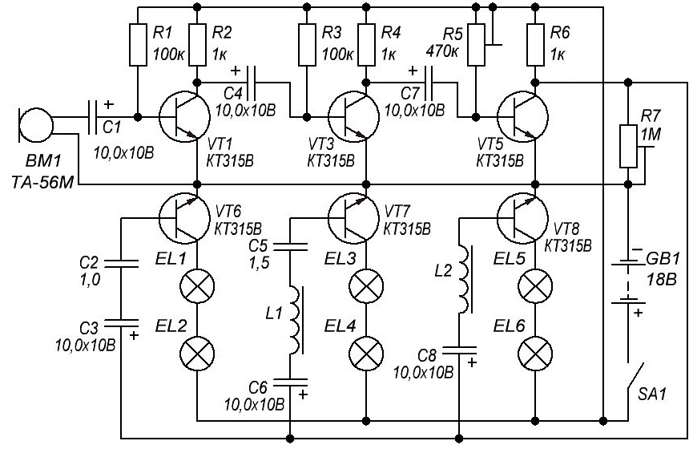
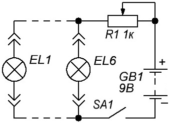
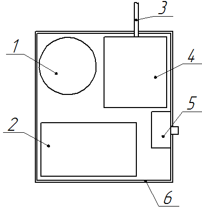
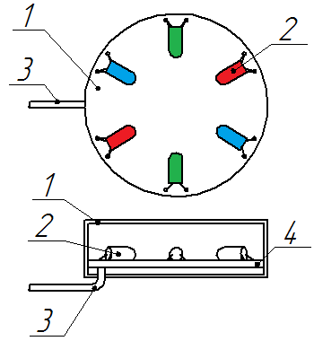

Электронный медальон
Данный цветомузыкальный электронный медальон «воспринимает» окружающие звуки микрофоном, превращая звук в электрический сигнал. В дальнейшем происходит усиление и фильтрация данного сигнала по трём каналам, работающих в высоких частотах, средних частотах и низких частотах. Каждый канал на выходе имеет лампы определенного цвета и загорается в такт музыке.

Таблица 1
| Обозначение | Наименование | Номинал | Примечание |
|---|---|---|---|
| BM1 | Микрофон | ДЭМШ-1 | головной телефон ТА-56м, ТА-4, ТГ-1, ТОН |
| С1, C3,C4,C6-C8 | Конденсатор электролитический | 10 мкФ × 10 В | К50-6, К50-16 |
| C2 | Конденсатор | 1,0 мкФ | |
| C5 | Конденсатор | 1,5 мкФ | керамические КМ5, КМ6 |
| EL1-EL6 | Лампа накаливания | СМН 6, 3-20 | с гибкими выводами |
| GB1 | Батарея элементов | 9-18 В | |
| R1, R3 | Резистор постоянный | 100 кОм/0,125 Вт | |
| R2, R4, R6 | Резистор постоянный | 1 кОм/0,125 Вт | |
| R5 | Резистор подстроечнный | 470 кОм | СП4 |
| R7 | Резистор подстроечнный | 1 МОм | СП4 |
| L1, L2 | Катушка индуктивности | самодельный | |
| SA1 | Выключатель | МТ1 | МТД1, ЦДМ, малогабаритные выключатели |
| VT1 | Транзистор биполярный | КТ315 | С любым буквенным индексом |
Транзисторы VT1, VT3 и VT5 образуют трехкаскадный усилитель низких частот. Конденсатор С2 образует высокочастотный фильтр, цепочка из дроселя L1 и конденсатора C5 — среднечастотный фильтр, дроссель L2 — низкочастотный фильтр. Транзисторы VT2, VT4, VT6 управляют накальными лампами EL1—EL6. Лампы EL1, EL2 синего цвета, EL3, EL4 — зелёного, a EL5, EL6 — красного.
Микрофон ВМ1 преобразует звуковые волны в электрический сигнал имеющий широкий частотный спектр, который усиливается каскадами на трех транзисторах VT1, VT3, VT5. Затем, через разделяющие конденсаторы С3, С6 и С8 сигнал идёт на входы фильтров. В результате на базу транзистора VT2 поступает сигнал в диапазоне 1—17 кГц, на транзистор VТ4 - с частотой 300—1000 Гц, а на транзистор VТ6 — в интервале 20—300 Гц. В это время транзисторы зажигаются накальные лампы ЕL1 — ЕL6, которые подключены в их коллекторные цепи. Амплитуда и частота входного сигнала определяет яркость и длительность свечения ламп. Регулировать чувствительность усилителя можно используя подстроечные резисторы R5 и R7.
Дроссели наматываются на полые бумажные каркасы в виде цилиндров высотой 20 мм и внутренним диаметром 3 мм. Каркасы дополняются по торцам щечками диаметром 15 мм. Сердечниками дросселей служат стальные винты М3 длиной примерно 25 мм. Катушки наматываются «внавал» проводом ПЭВ или ПЭЛ диаметром 0,1 мм. Дроссель L1 наматывается примерно на половину каркаса, а L2 — до его заполнения.
Лампочки необходимо подобрать с одинаковыми характеристиками, иначе это может повлиять на яркость свечения. Для этого, можно использовать устройство, которое показано на рисунке 2. Присоединив к нему лампы и двигая движок переменного резистора, сравнивайте свечение и отберите 6 идентично светящихся лампочек.

Конструктивно устройство состоит из электронного блока (рис. 3) и медальона (рис. 4) соединеных шнуром из гибких тонких проводов в изоляции.
Элементы электронного блока размещаются в пластмассовой коробке. Примерный вариант конструкции показан на рисунке 5. На лицевой панели корпуса устанавливается микрофон, а на боковой стенке — выключатель питания. В верхней стенке корпуса имеется отверстие для шнура соединения. Конструкция электронного блока должна иметь высокую прочность, чтобы выдерживать сильные механические нагрузки.

1 - микрофон, 2 - элементы питания, 3 - соединительный шнур, 4 - плата с элементами, 5 - выключатель питания, 6 - корпус
Медальон имеет форму круглой плоской коробочки с прозрачной верхней крышкой. Лампочки устанавливаются на тонкой круглой плате из гетинакса или текстолита. С внешней стороны основания устанавливается застежка и сверлится отверстие для соединительного жгута.

1 - корпус, 2 - лампы, 3 - соединительный шнур, 4 - плата
Перед использованием электронного медальона необходимо к выводам эмиттера и коллектора транзистора VТ5 подключить вольтметр постоянного тока, подстроечные резисторы R5 и R7 установить в среднее положение. Подав питание, перемещая движок резистора R5, а далее и R7, установить напряжение, на транзисторе VТ5 которое, не будет превышать 1 В.
Источники:
inarticle.ru - Украшения своими руками – электронный медальон